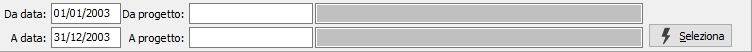
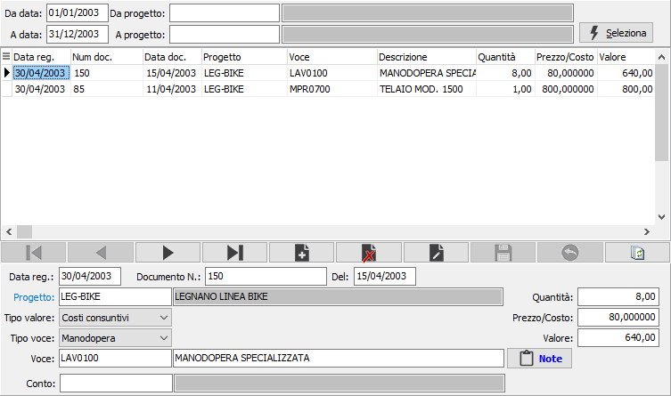

Movimenti progetti
La fase di registrazione dei movimenti relativi ai progetti consente di gestire movimenti manuali attraverso un’apposita prima nota che viene trattata dai vari programmi di analisi e all’interno della sezione “Valori” del progetto. Questa movimentazione consente di inserire tutte le tipologie di movimento che normalmente corrispondono ai vari documenti da associare al progetto (vendite, acquisti ecc.).
La sezione superiore della finestra consente di selezionare movimenti di progetti già inseriti per modificarli oppure aggiungerne di nuovi.

Possono essere indicate le date di analisi, entro le quali visualizzare i movimenti ed i codici progetto; la pressione del pulsante Seleziona consente di accedere alla manutenzione vera e propria.

La sezione in basso contiene il dettaglio dei singoli movimenti registrati:
DATA REGISTRAZIONE: data del movimento.
DOCUMENTO N.: campo alfanumerico che descrive il numero del documento a cui si riferiscono i dati del movimento.
DEL: data del documento a cui si riferiscono i dati del movimento.
PROGETTO: campo alfanumerico di 15 caratteri che indica il codice del progetto su cui registrare il movimento. Sul campo sono attive le funzioni di ricerca (F9).
TIPO VALORE: definisce il tipo di valore su cui incide il valore del movimento; valori possibili: costi preventivi, costi consuntivi, costi previsti, ricavi preventivi, ricavi consuntivi, ricavi previsti.
TIPO VOCE: indica il tipo di voce da movimentare; valori previsti: materiali, manodopera, lavorazioni, vari.
VOCE: campo alfanumerico di 22 caratteri che identifica l’attività svolta. Sul campo sono attive le funzioni di ricerca (F9) sulla tabella Articoli limitato al tipo di voce selezionato.
NOTE: bottone che abilita un ulteriore specifica di annotazioni per il rigo corrente.
QUANTITÀ: campo numerico che indica la quantità, in relazione al tipo di movimento inserito.
PREZZO/COSTO: campo numerico contenente il prezzo oppure il costo applicato alla quantità.
VALORE: è l’importo del movimento calcolato in base alla quantità ed al prezzo/costo.
La pressione sul pulsante Salva posto sulla toolbar determina il salvataggio dei movimenti inseriti o modificati.